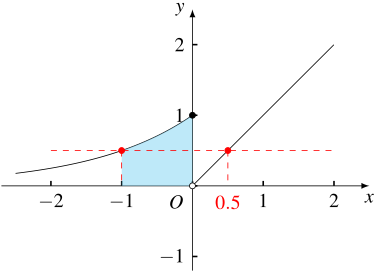
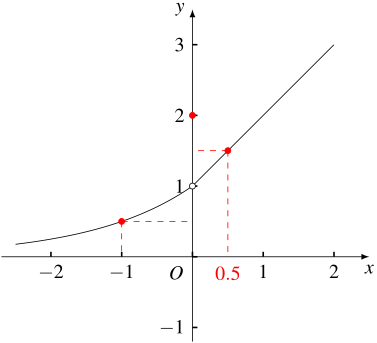
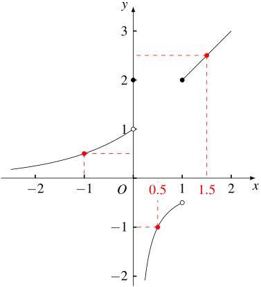

1. 题目
已知函数 f(x) 的定义域为 R，且当 x<0 时，f(x)=2x。对任意 x0∈R，定义集合 D(x0)={d∈R∣f(x0+d)>f(x0)}。
（1）若当 x⩾0 时，f(x)=1−x，求 D(−1)；
（2）若 f(x) 是奇函数，f(x1)⩽f(x2)，且 x1x2=0，证明：D(x2)⊆D(x1)；
（3）设 f(x) 满足：① 若 f(x1)⩽f(x2)，则 D(x2)⊆D(x1)；② 当 0<x<1 时，f(x)<f(0)。
（ⅰ）证明：f(0)⩾1；
（ⅱ）证明：f(x) 在区间 (0,+∞) 单调递增。
2. 分析
第（1）问直接画图就可以看出来。
第（2）问分类讨论即可（x1⩽x2<0，0<x1⩽x2，x2<0<x1）。
第（3）问第（ⅰ）小问反证即可。
第（ⅱ）小问则需要更细致的讨论，前面两小问可以给我们一些提示。
首先，我们可以把单调递增的条件用集合 D(x) 的形式来表示：
任取 0<x1<x2，则 f(x) 在 (0,+∞) 上单调递增意味着
f(x1)<f(x2)=f(x1+(x2−x1))⟹x2−x1∈D(x1)
由 x1 和 x2 的任意性可知，∀x∈(0,+∞)，(0,+∞)⊆D(x)。
第（2）问的结论告诉我们，f(x)<0 且单调递增是满足条件的。
我们可以在值域上分割函数：
ABC={x>0∣f(x)⩽0}={x>0∣0<f(x)<1}={x>0∣f(x)⩾1}
我们先来看集合 A：
∀x∈A，ξ<0，有
f(x)<f(ξ)⟹(0,−ξ]⊆D(ξ)⊆D(x)⟹(0,+∞)⊆D(x)
因此，f(x) 在集合 A 上是单调递增的。
接下来看集合 B：
∀x∈B，设 t=log2f(x)∈(−∞,0)，有 f(x)=f(t)，于是
(−x+t,−x)⊆D(x)⊆D(t)
这显然不成立，可知 B=∅。
接下来看集合 C：
∀x∈C，η<ξ<0，有
f(η)<f(ξ)⟹D(ξ)⊆D(η)
由 x−ξ∈D(ξ) 可知 x−ξ∈D(η)，因此
f(η+x−ξ)=f(x−(ξ−η))>f(η)
结合前面证明的 B=∅ 可知 f(x−(ξ−η))⩾1，即 x−(ξ−η)∈C。
由 ξ 和 η 的任意性可知，(0,x)∈C。
也就是说，集合 C 一定可以向左扩展到 0。
因此，集合 A 一定完全在集合 C 的右侧（如果都非空的话）。
但是，这实际上和条件②产生了矛盾。
有上面可知，一定有充分小的 ε∈(0,1)，满足 ε∈C，任取 ξ<0，则
f(ε)<f(0)f(ξ)<f(ε)⟹−ε∈D(ε)⟹D(ε)⊆D(ξ)}⟹−ε∈D(ξ)
这显然是不成立的。
因此一定有 C=∅，A=(0,+∞)。
综上我们可以得到：f(x) 在 (0,+∞) 上满足 f(x)<0 且单调递增。这就回到了类似第（2）问的情况。
我们在推导的时候，大量用了任意的表示，但是在写证明的时候，最好给出具体的构造。
3. 解答
3.1. 第（1）问
通过图像可知
D(−1)=(0,23)
3.2. 第（2）问
由定义知，
f(x)=⎩⎨⎧2x,0,−2−x,x<0x=0x>0
- 若 x1⩽x2<0，则 D(x1)=(0,−x1)，D(x2)=(0,−x2)⊆D(x1)；
- 若 0<x1⩽x2，则 D(x1)=(−∞,−x1]∪(0,+∞)，D(x2)=(−∞,−x2]∪(0,+∞)⊆D(x1)；
- 若 x2<0<x1，则 D(x1)=(−∞,−x1]∪(0,+∞)，D(x2)=(0,−x2)⊆D(x1)。
3.3. 第（3）问 第（ⅰ）小问
先证明：若 f(x1)=f(x2)，则 D(x1)=D(x2)。
这是显然的：
f(x1)=f(x2)⟹{f(x1)⩽f(x2)⟹D(x1)⊆D(x2)f(x2)⩽f(x1)⟹D(x2)⊆D(x1)}⟹D(x1)=D(x2)
为了叙述方便，不妨设 f(0)=t。
假设 t∈(0,1)，则
f(0)=f(lnt)=t⟹D(0)=D(lnt)
但是 −21lnt∈D(0)，−21lnt∈/D(lnt)，矛盾。
假设 t∈(−∞,0]，则
f(0)<f(−1)⟹D(−1)⊆D(0)
注意到 21∈D(−1)，于是 21∈D(0)，根据定义有 f(0+21)=f(21)>f(0)，这与条件②矛盾。
因此，t∈[1,+∞)，即 f(0)⩾1。
3.4. 第（3）问 第（ⅱ）小问
假设存在 x 使得 f(x)∈(0,1)，设 t=log2f(x)∈(−∞,0)，则 D(x)=D(t)。
但是 −x+21t∈D(x)，−x+21t∈/D(t)，矛盾。
因此，不存在 x 使得 f(x)∈(0,1)。
上面证明了 B=∅。
方法和上面第（ⅰ）小问的第一个反证是类似的。
考虑 x∈(0,1)，假设 f(x)⩾1，则
f(−1)<1⩽f(x)<f(0)⟹−x∈D(x)⊆D(−1)
这显然是不成立的。
因此，当 x∈(0,1) 时，一定有 f(x)<0。
上面证明了 (0,1)⊆A。
和上面第（ⅰ）小问的第二个反证都是利用条件②构造矛盾。
任取 0<x1<1⩽x2，假设 f(x2)⩾1，则
f(−x2)<f(−x1)⟹D(−x1)⊆D(−x2)
注意到 x1+x2∈/D(−x2)，因此 x1+x2∈/D(−x1)，因此
f(−x1+(x1+x2))⩽f(−x1)<1⟹f(x2)<0
矛盾，因此对于任意的 x⩾1，均有 f(x)⩽0。
上面证明了 C=∅。
综上可知，对于任意的 x∈(0,+∞)，均有 f(x)⩽0。
任取 0<x1<x2，则
f(x1)⩽0<f(x1−x2)f(x1−x2)<f(0)⟹D(x1−x2)⊆D(x1)⟹x2−x1∈D(x1−x2)}⟹x2−x1∈D(x1)
因此 f(x1+(x2−x1))>f(x1)，即 f(x2)>f(x1)，因此 f(x) 在 (0,+∞) 上单调递增。
4. 临场建议
如果平时没有140+的水平，建议完成前3个小问，直接放弃最后一小问，把剩余时间用来确保前面的题目。
如果有时间来死磕最后一问，但没有思路的话怎么办？
答：举例。
这种偏分析的题目，就是要通过各种正面或反面的例子，来帮助我们理解抽象的条件。
例如，我们可以先从最简单的开始分析：
f(x)=⎩⎨⎧2x,1,x,x<0x=0x>0

根据函数图像我们马上可以找到反例：
D(0.5)D(−1)=(−1.5,−0.5]∪(0,+∞)=(0,1]∪(1.5,+∞)
不满足条件。
于是我们发现，如果存在 x>0 使得 0<f(x)<1，都可以找到这样的反例。
因此，当 x>0 的时候，函数图像要么在 x 轴下方，要么在 y=1 上方。
那么大致可以分为三种情况：
- 函数图像全在 x 轴下方；
- 函数图像全在 y=1 上方；
- 函数图象一部分在 x 轴下方，一部分在 y=1 上方。
第1种情况和第（2）问类似，是满足条件的。
接下来我们分析看第2种情况，例如：
f(x)=⎩⎨⎧2x,2,x+1,x<0x=0x>0

根据图像我们可以看到，f(−1)、f(0)、f(0.5) 这三个点之间存在矛盾：
D(0.5)D(−1)={−0.5}∪(0,+∞)=(0,+∞)
显然 D(0.5)⊈D(−1)。而多出来的哪个元素就是由于 f(0) 这个点造成的。
由于条件②要求在 x∈(0,1) 上满足 f(x)<f(0)，因此此时 D(x) 中必然包含一个负数元素。
但是当 x<0 时，D(x) 中一定没有负数元素，这就会造成矛盾。
因此只有一种可能，那就是当 x∈(0,1) 时，函数图像不能在 y=1 上方，只能在 x 轴下方。
因此，第2种情况是不存在的。
最后，我们来分析第3种情况，例如：
f(x)=⎩⎨⎧2x,2,−2x1,x+1,x<0x=00<x<1x⩾1

图中的三个点有
D(1.5)D(−1)=(0,+∞)=(0,1]∪[2,+∞)
显然 D(1.5)⊈D(−1)。
这个是由于条件②要求 f(0.5)<0，这就造成了 D(−1) 的中间有一段空缺，从而导致包含关系不成立。
实际上，只要函数有像 f(1.5) 这样在 y=1 上方的点，就会造成这种情况。
因此，函数图像不能有在 y=1 上方的部分，即第3种情况也是不可能的。
当然，也有可能是函数图像在右边又下来了，但是这就肯定不满足单调性的结论了，所以就直接舍弃了。
因此，最终只有第1种情况是成立的。
接下来，我们只需要找到合适的点来进行构造，证明上面的猜测即可。